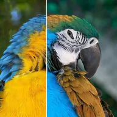

Channel Remap (RGB)

Rebuilds each color channel from another channel of the layer, for false color or for moving luminance into alpha.
Settings
| Setting | Type | Range | Default |
|---|---|---|---|
| R | Choice | Red, Green, Blue, Alpha, Luminance, Zero, Full | Red |
| G | Choice | Red, Green, Blue, Alpha, Luminance, Zero, Full | Green |
| B | Choice | Red, Green, Blue, Alpha, Luminance, Zero, Full | Blue |
| A | Choice | Red, Green, Blue, Alpha, Luminance, Zero, Full | Alpha |